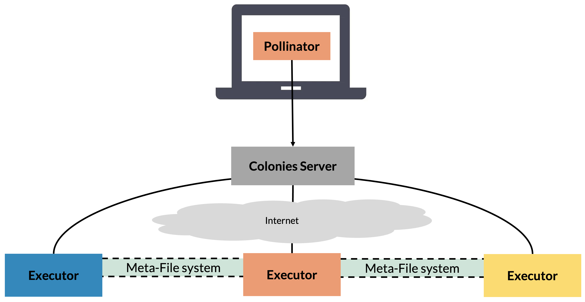

Introduction
Pollinator is an application that simplifies the execution of jobs across different platforms. Pollinator is designed to simplify and streamline job execution across platforms, e.g executing AI computations on HPC, Edge, or Kubernetes platforms. Pollinator is also designed to ensure uniform and portable workload execution across these diverse platforms.
Pollinator can significantly simplifies interactions with HPC or Kubernetes systems. For instance, it completely eliminates the need to manually login to HPC nodes to run Slurm jobs. It seamlessly synchronizes and transfers data from the user’s local filesystem to remote Executors, offering the convenience of a local development environment while harnessing powerful supercomputers and cloud platforms. With Pollinator, users are no longer required to have in-depth knowledge of Slurm or Kubernetes systems, speeding up development and making powerful HPC systems available to more people.
How does it work?
Pollinator assumes the existance of the directories in the table below.
Directory |
Purpose |
Synchronization Strategy |
|---|---|---|
./cfs/src |
Contains source code or binaries to be executed |
Will be synchronized from local computer to remote executor before execution |
./cfs/data |
Datasets or other data is stored here |
Will be synchronized from local computer before execution, but not removed after job completion |
./cfs/result |
Produced data can be stored here. |
Will be synchronized from remote executor to local computer after execution |
Synchronize the source, data, and result directories to the ColonyOS meta-filesystem.
Generate a ColonyOS function specification based on the
project.yamlfile.Automatically generate and submit a ColonyOS function specification to a Colonies server.
If the job is assigned to an HPC Executor:
Pull the Docker container to the HPC environment, and convert it to a Singularity container.
Synchronize the source, data, and result directories to make the project file accessible on the remote HPC environment.
Generate a Slurm script to execute the Singularity container, including binding the source, data, and result directories to the container.
Execute and monitor the Slurm job, including uploading all standard outputs and error logs to a Colonies server.
Close the process by making a request to the Colonies server.
If the job is assigned to a remote Kubernetes Executor:
Synchronize the source, data, and result directories to a shared Persistent Volume.
Generate and deploy a K8s batch job.
Monitor the execution of the batch job, including uploading logs to a Colonies server.
Close the process by making a request to the Colonies server.
Getting started
To use Pollinator, you to have access to a colony where a KubeExecutor or an HPCExecutor is available. The following environmental varialble must be set:
ColonyOS credentials (private keys and S3 keys) and configurations are available as environmental variables. It also assumes the existance of an HPC Executor named lumi-standard-hpcexecutor, connected to the LUMI standard CPU partition.
export COLONYOS_DASHBOARD_URL="..."
export COLONIES_TLS="true"
export COLONIES_SERVER_HOST="..."
export COLONIES_SERVER_PORT="443"
export COLONIES_COLONY_NAME="..."
export COLONIES_PRVKEY="..."
export AWS_S3_ENDPOINT="..."
export AWS_S3_ACCESSKEY="..."
export AWS_S3_SECRETKEY="..."
export AWS_S3_REGION_KEY=""
export AWS_S3_BUCKET="..."
export AWS_S3_TLS="true"
export AWS_S3_SKIPVERIFY="false"
Creating a new project
As an example, we are going to run some Python code at the LUMI supercomputer in Finland. When creating a new project, we must specify an executor type. Let’s list which executor is available in the colony:
Next, let’s generate a new Pollinator project with **lumi-std* as target executor.
mkdir lumi
cd lumi
pollinator new -n lumi-std
INFO[0000] Creating directory Dir=./cfs/src
INFO[0000] Creating directory Dir=./cfs/data
INFO[0000] Creating directory Dir=./cfs/result
INFO[0000] Generating Filename=./project.yaml
INFO[0000] Generating Filename=./cfs/data/hello.txt
INFO[0000] Generating Filename=./cfs/src/main.py
The generated project.yaml contains configuration need to run the ./cfs/src/main.py Python source file. Note that is possible to run any languge by using another Docker container.
projectname: 11bdf92c7560bee1d8c154504427bfbb9483aabf130b60f17de5d88a5d5f4ece
conditions:
executorNames:
- ┆ - lumi-std
odes: 1 processesPerNode: 1 cpu: 1000m mem: 1000Mi walltime: 600 gpu:
count: 0 name: “”
- environment:
docker: python:3.12-rc-bookworm rebuildImage: false cmd: python3 source: main.py
The code shows generated example code in main.py.
import os
import socket
# Print the hostname
hostname = socket.gethostname()
print("hostname:", hostname)
# The projdir is the location on the executor where project dirs have been synced
projdir = str(os.environ.get("PROJECT_DIR"))
# The processid is the unique id of the process where this code will execute at a remove executor
processid = os.environ.get("COLONIES_PROCESS_ID")
print("projdir:", projdir)
print("processid:", processid)
# Open the hello.txt file and print the content
file = open(projdir + "/data/hello.txt", 'r')
contents = file.read()
print(contents)
# Write the result to the a file in the result dir
result_dir = projdir + "/result/"
os.makedirs(result_dir, exist_ok=True)
file = open(result_dir + "/result.txt", "w")
file.write("Hello, World!")
file.close()
Run the code
pollinator run --follow
Uploading main.py 100% [===============] (2.8 MB/s)
Uploading hello.txt 100% [===============] (59 kB/s)
INFO[0000] Process submitted ProcessID=138bdf7e51b669ff65c6c90188300ecf09a9536dd2669df5ba2da1eaa12c58e5
INFO[0000] Follow process at https://dashboard.colonyos.io/process?processid=138bdf7e51b669ff65c6c90188300ecf09a9536dd2669df5ba2da1eaa12c58e5
hostname: nid002237
projdir: /cfs/49fb2248ff701f9a57a1a9eb845156bd5eb6ed286a854525bd119edbb4af21ad
processid: 138bdf7e51b669ff65c6c90188300ecf09a9536dd2669df5ba2da1eaa12c58e5
Hello world!
INFO[0005] Process finished successfully ProcessID=138bdf7e51b669ff65c6c90188300ecf09a9536dd2669df5ba2da1eaa12c58e5
Downloading result.txt 100% [===============] (419 B/s)